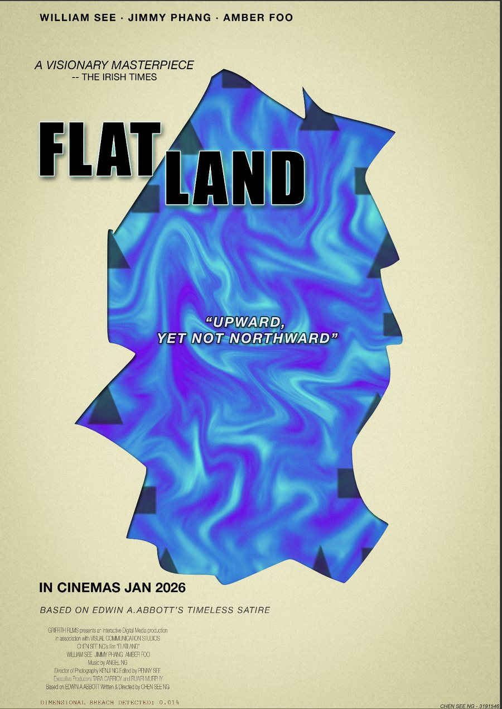
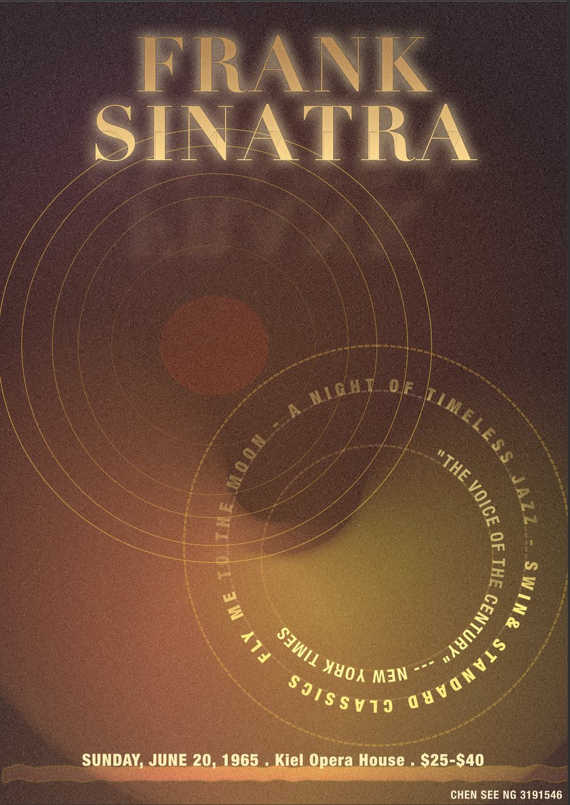

Catalogue
Work
Every project in this archive has its own case file: what the brief was, what I decided, and what I’d do differently. Open one to read it.

Lead developer & designer · MSc dissertation · 2026
Somewhere Still
A browser experience about Alzheimer’s built as a descent into deep water, where the interface performs the symptom instead of naming it. Three.js, p5.js and GLSL, with no framework and no build step.

Full stack · Astro & Supabase · 2025
Memory Vault
A Fahrenheit 451 archive with real authentication, full CRUD and relational data. Server-rendered Astro, Supabase Postgres, session tokens in httpOnly cookies, deployed on Netlify.

Front-end · Multi-page site · 2025
Albert Camus
An eleven-page responsive site built from scratch. Fifty design tokens, dark mode, accessible carousel and timeline components, and forty-four commits of iteration. No framework.

Creative coding · p5.js · 2026 · Selected for the department showcase
Do Androids Dream?
An empathy drawing terminal that reads how you draw rather than what you draw, measuring speed, tremor and hesitation on every stroke to decide whether a human is holding the mouse. 1,500 lines, no framework.

UX/UI · Figma prototype · 2026 · Group lead, three-person team
GrifHub
A learning platform designed to replace Moodle at Griffith College. Built on 55 survey responses and a lecturer interview, through sixteen wireframes to nineteen screens across mobile and desktop. User testing killed one of my own cards a week before the deadline.
Also in the archive
Also worth opening
Two more projects with case files of their own, kept out of the main catalogue to keep it short.
-
A-01
Ireland SOS
A survival guide for international students, entered by answering a phone call you are not allowed to decline. Two questions at the door rewrite the homepage before the visitor sees it.
-
A-02
Flowers for Algernon
A generative composition in which a single Gaussian function governs nine drawing layers, including whether text renders legibly or as a scrawl.
Two posters
Built in Photoshop for Visual Communication. The only work here that was never meant for a screen.


Technical Stack
Tools on the shelf
The visual system behind this site is documented separately: read the design system.